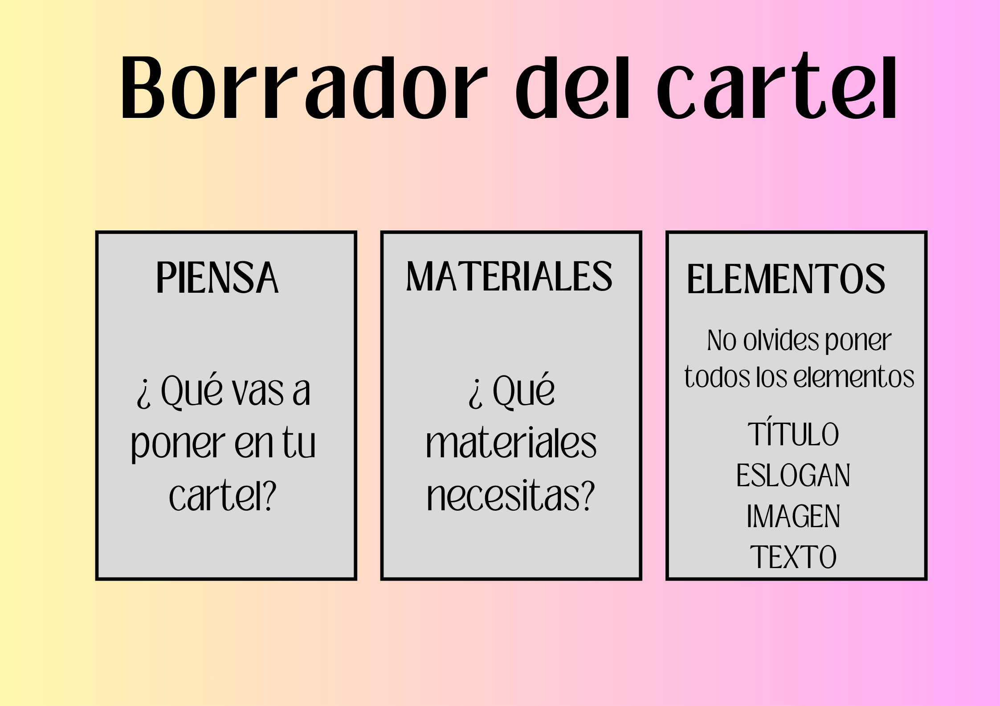
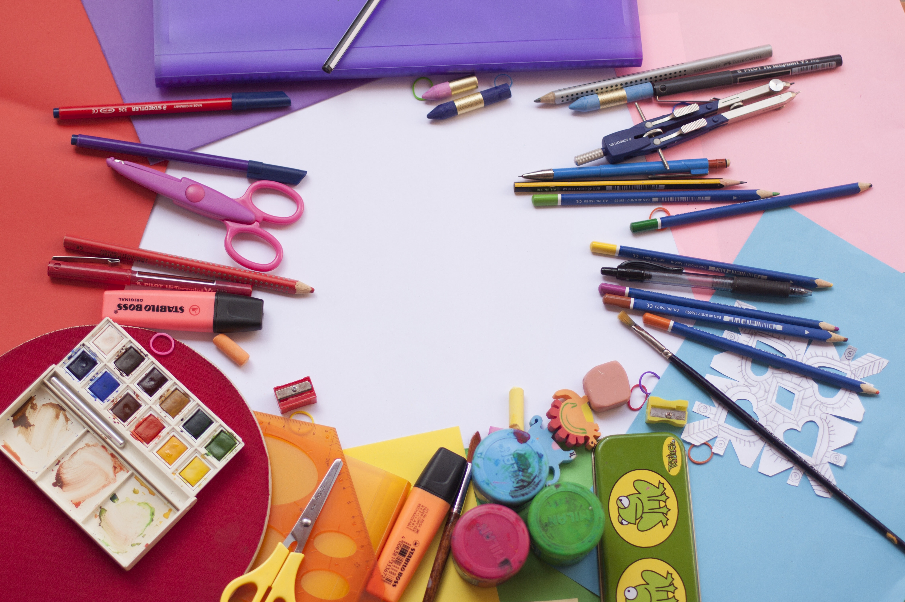
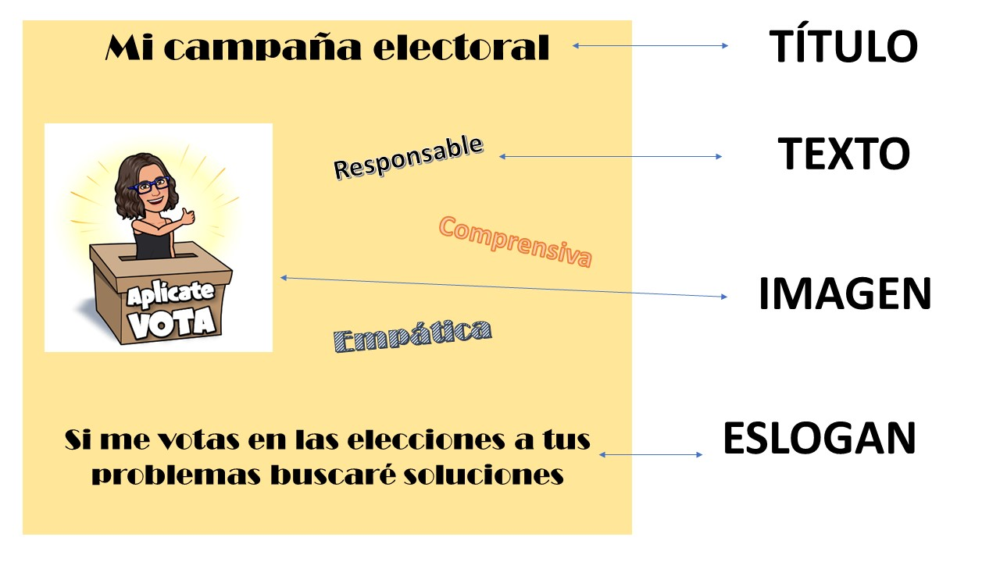
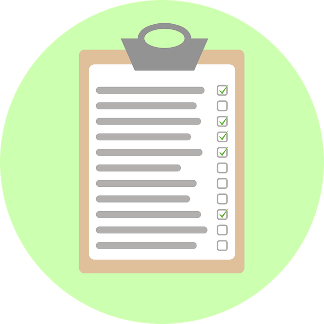

A. Planifica el cartel
Antes de comenzar con la elaboración de tu cartel es importante realizar primero un borrador.
Para ello, seguiremos tres pasos:

Copia en tu diario de aprendizaje los pasos de la planificación que aparecen arriba.
Primer paso: Piensa qué vas a poner en tu cartel
Debemos tener claro para qué servirá nuestro cartel y qué elementos debe tener. Te proponemos las siguientes preguntas como guía:
- ¿He visto alguna vez un cartel electoral?
- ¿Cuál es el objetivo de ese tipo de carteles?
- ¿Qué elementos tiene?
Segundo paso: ¿Qué necesito? Materiales necesarios
Antes de ponernos con ello es importante saber los materiales que voy a utilizar. Aquí tienes algunas ideas que te pueden ayudar:
- Selecciono el tamaño del texto.
- Busco la imagen que voy a poner.
- Busco ejemplos.
- Busco los materiales: colores, cartulinas, tijeras, revistas para recortar…

Tercer paso: Elementos
Es necesario elegir la información que vas a incluir en tu cartel antes de comenzar a elaborarlo y no olvidar incluir todos sus elementos.
Recuerda, debe ser un cartel llamativo, con información positiva e importante sobre ti, resaltando las cualidades que te convierten en un buen candidato.
No olvides incluir todos los elementos:
- Título: corto y con la información del cartel.
- Eslogan: oración corta que llame la atención. Puede tener rima.
- Texto: aquí puedes escribir el mensaje que quieres transmitir a los que vean el cartel.
- Imagen: foto, imagen o dibujo con tu mensaje.
Aquí tienes un ejemplo. Este es el cartel que planificó Isabel.

B. ¡ Ahora te toca a ti !
Ahora te toca planificar tu propio cartel haciendo un borrador. Recuerda:
- Revisa tu programa electoral.
- Revisa los elementos de un cartel e inclúyelos todos.
- Utiliza adjetivos y sinónimos..
- Si dudas sobre alguna palabra búscala en el diccionario.
¡¡ Ánimo !!
C. ¡ Llegó el momento !
Teniendo en cuenta todo lo que hemos trabajado en las páginas anteriores pasa tu cartel a limpio en una cartulina tamaño A4 vertical y entrega este en clase a tu maestro. Actividad evaluable.
Posteriormente haremos la pegada de carteles electorales.

D. Ayuda a tus compañeros a mejorar.
Ahora vas a evaluar los carteles de todos tus compañeros y el tuyo propio. Para ello, tu maestro te facilitará la ficha de evaluación y la rúbrica. Rodea en rojo la puntuación total de los 3 candidatos o candidatas que hayan obtenido mejor puntuación.
Una vez que los hayas evaluado todos, tendrás más motivos para votar a un candidato o a otro.